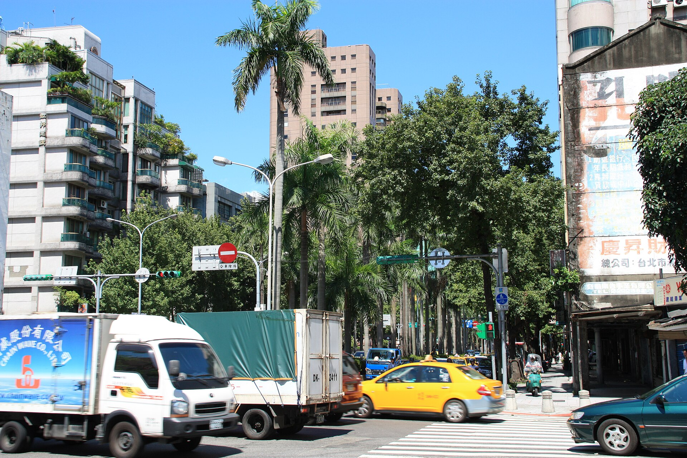

紅燈多等十秒，換來的是誰的順暢？
週期、綠燈分配與路口協調可以計算，但「最佳時制」仍取決於一座城市想優先服務誰。
同一段路，早上一路綠燈，下午卻走走停停。改動一個路口，會不會就順了？有時可以，有時只是讓車更快抵達下一個堵住的街口。紅綠燈不是各自分配幾秒鐘的小時鐘，而是把有限通行時間與有限排隊空間分給不同方向的人。理解這點，才能問清楚：當系統說「延誤降低了」，它降低的是哪一群人的延誤，又把等待留在哪裡？

一、一份時制，至少有三個彼此牽動的旋鈕
先以簡化路口理解週期、時比與時差。週期是一組燈號完整運作一輪的時間；時比是各時相分配的比例；時差則是相鄰路口在時間上的相對關係。美國聯邦公路管理局 FHWA 的協調控制說明，把這三者列為核心參數[4]。
假設兩個路口相隔一段車程，第一個放出的車隊需要時間抵達第二個。兩邊同時轉綠，未必能讓這批車連續通過；適當錯開，才可能形成綠燈帶。這個例子不是鼓勵駕駛追趕燈號，而是說明系統看的不是單一秒數，而是車隊移動與路口間距。
同樣地，拉長週期可能讓某方向一次通過更多車，也可能讓另一方向等更久。不是把所有紅燈各減十秒，總容量就會憑空增加：各方向仍要輪流使用衝突的空間，行人與清道所需時間也不能任意省去。
二、定時不等於隨便，也不等於永遠不變
《土木水利》2020 年的台北案例文章介紹，定時號誌通常把一天切成若干時段，各時段使用依歷史車流建立的計畫[1]。這份文章由系統業者及交工處人員共同撰寫，可用來理解當年實作，不宜把其中全台定時號誌比例或更新週期直接當成 2026 年統計。
若需求每天大致重複，事先調好的計畫未必差。FHWA 也指出，經過良好選擇的週期及時段計畫，在某些條件下可以有很好的續進效果。動態控制的價值不在於「由電腦算」這個標籤，而在於現場變化是否超過固定計畫能適當處理的範圍。
展覽散場就是一種反例：平常的分流比例突然不合用，原先足夠的綠燈可能不再清得完隊伍。但若問題是偵測器壞掉、鄰近控制器的時鐘不同步，先修基本設備，也可能比換上一整套演算法更直接。
三、知道現在有幾輛車，還不等於知道該怎麼分
台北 2019 年內湖、南港的十處路口案例，使用偵測資料與車流模型，每五分鐘重新計算時制。原文進一步說明，模型要把部分路段的偵測資訊，轉為對整個路網流動的估計，再比較不同時制的結果。它不是單純看到哪邊車多，就無條件延長那邊綠燈。
2023 年市府專案介紹又提到，每十五分鐘更新未來兩小時流量與速率預測[2]。這是另一項預測工作的更新頻率，不能和前述五分鐘控制間隔混成一個所有路口的共同設定。量測回答現在看見什麼，預測回答接下來可能如何，控制則決定在限制內怎麼動作。
資料不足時，模型可以結合上下游偵測與歷史資料推估；但填補不是直接觀測。原案例文章本身就列出偵測器不穩、通訊中斷、車道涵蓋不足等挑戰。FHWA 也強調，演算法的決策可靠度離不開偵測設備維護[3]。
四、下游裝不下，再多綠燈也無法清掉車隊
想像一個短街廓，前方路口的隊伍已排回後方。此時後方繼續放綠燈，車不一定能離開，甚至堵住橫向通行。這不是車流量數字不夠大，而是下游的空間已經用完。
FHWA 的適應性控制評估指南把「管理排隊」獨立列為目標：避免上游繼續把車放進已沒有空間的路段，有時要將車暫留在較能容納隊伍的位置[5]。從那個路口看，它像是故意讓人多等；從路網看，卻可能是在保護下一個交叉口不被堵死。
這也解釋為何「我這邊還有車，為什麼不一直綠燈」不是完整問題。控制器得同時面對誰有需求，以及誰有地方可去。需求超過整個路網容量時，調燈可以管理損失，卻不能承諾把壅塞全部消除。
五、最佳化裡，必須先放進價值選擇
同一份 FHWA 指南把車流順暢、最大通過量、各方向可及性與排隊管理列為不同目標。幹道綠燈帶可能減少停車，卻增加支道等待；若商圈需要方便轉向與進出，時制就不一定該把幹道續進放在最前面。
台北案例的目標包含車輛旅行時間、停等及延滯；模型還需要和行人、公共運輸優先等實際策略相容。因此，若一份成效只報汽車平均旅行時間，不能自行補成行人過街也改善，或每一方向都受惠。系統能把選定目標算得更好，不代表它替社會決定了目標。
這也是理解 AI 交通最重要的一步：問它在優化什麼、哪些限制不能動、哪些使用者的時間沒有被納入。把價值選擇藏在一個「智慧」標籤裡，比固定計畫本身更難檢查。
六、改善百分之十，是和哪一天、哪套時制比？
2020 年台北案例報告，運作前後整體行車時間改善約 7% 至 10%、路口延滯減少 10% 至 15%。這是實作團隊的前後比較結果，不是隨機試驗；其中油耗、排放及經濟效益還包含換算，不能一律當現場儀器直接量得。
FHWA 的評估指南指出，前後調查隔得越久，車流需求越可能已改變；也要注意舊時制是否本來就欠缺維護。它建議在可行情況下用接近時段的開啟、關閉比較，並檢查支道、非尖峰與異常狀況，而不是只展示最好看的幹道平均值[6]。
所以，紅燈由誰決定，答案並不只有工程師或演算法。需求量、道路幾何、資料品質、營運目標與評估方式都在其中。比較有用的公開說明，應讓人知道多等的十秒換到了什麼，也讓沒有被平均數代表的人，看得見自己的位置。
查證資料來源6 項
實際支持文中事實主張的來源，逐條標註支持的內容；文內如有 [數字] 標記，對應此處編號。
- 智慧型動態交通號誌控制系統：應用於台北市重點壅塞區域（江伊嵐、陳奕廷、葉梓銓，《土木水利》第 47 卷第 4 期，2020 年 8 月） ↗
- 交工處 AI 都市即時交通車流及速率預測計畫（臺北市智慧城市專案辦公室，資料更新 2023-08-11） ↗
- Adaptive Signal Control FAQs（美國聯邦公路管理局 FHWA） ↗
- Signal Timing on a Shoestring：Coordination Timing Issues（FHWA） ↗
- Measures of Effectiveness… Chapter2（FHWA） ↗
- Measures of Effectiveness… Chapter5（FHWA） ↗
延伸探討
把故事帶回自己的思考
如果你家附近路口的汽車通過量增加，行人卻得等更久，你會要求哪一種資料再決定這算不算改善？若只能優先一項，是平均通行時間、最長等待時間，還是每種交通方式都能穩定通過？